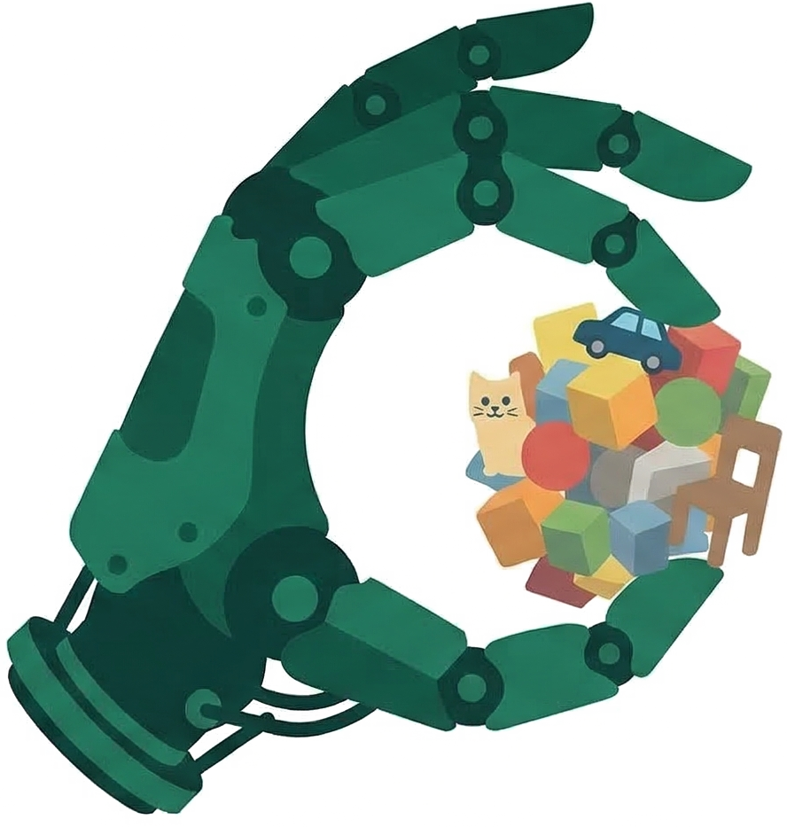
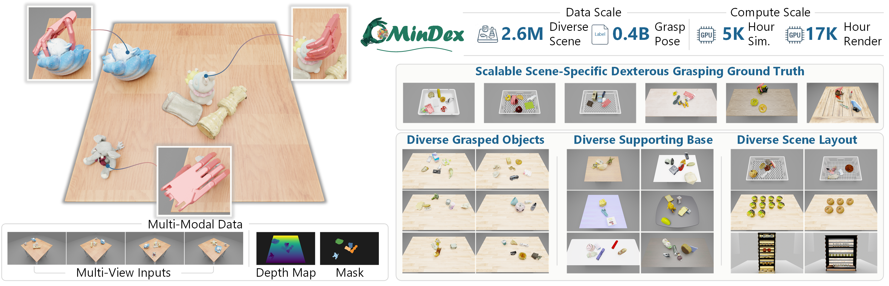
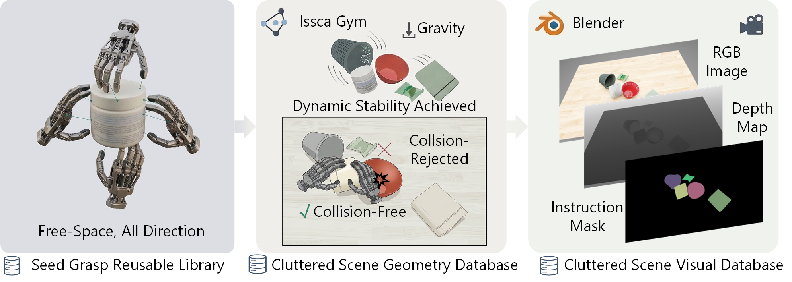
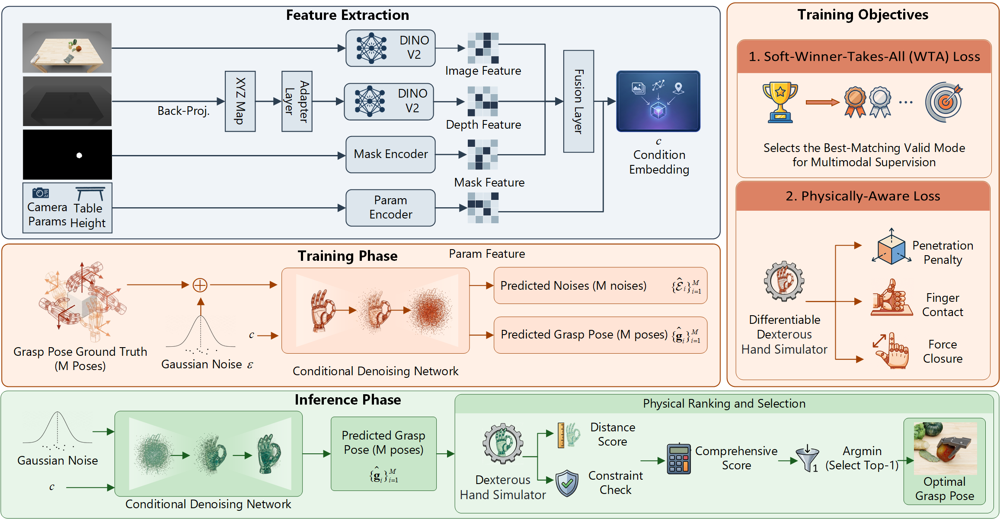
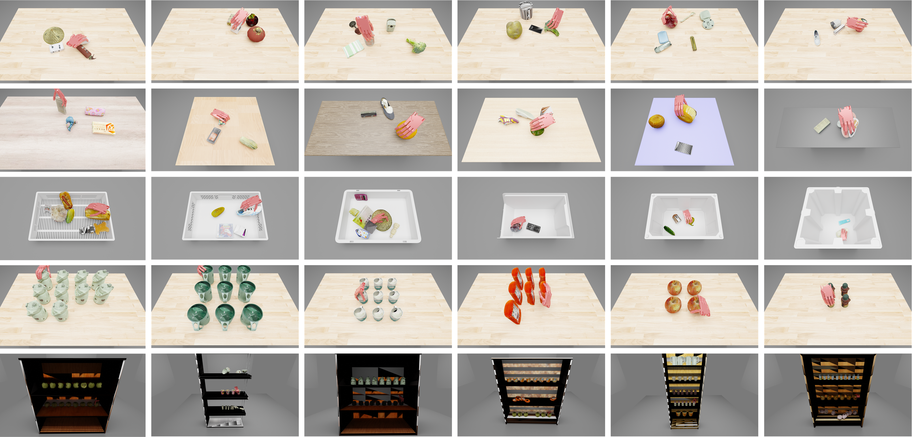
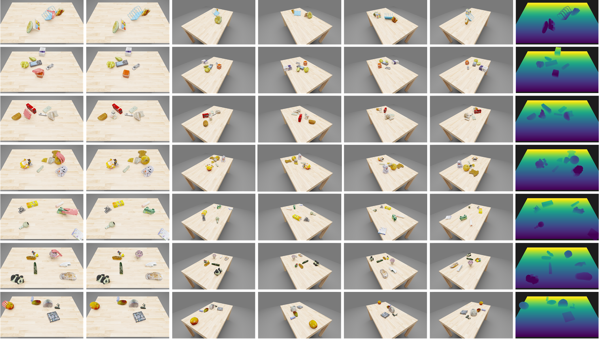
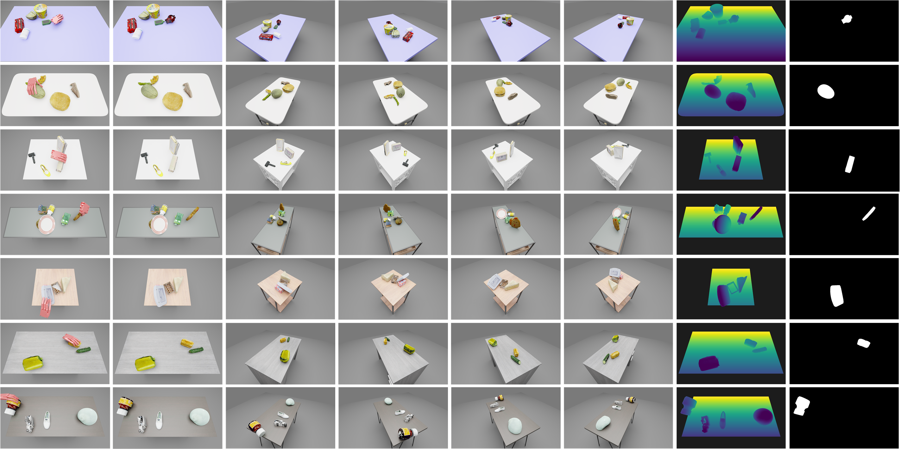
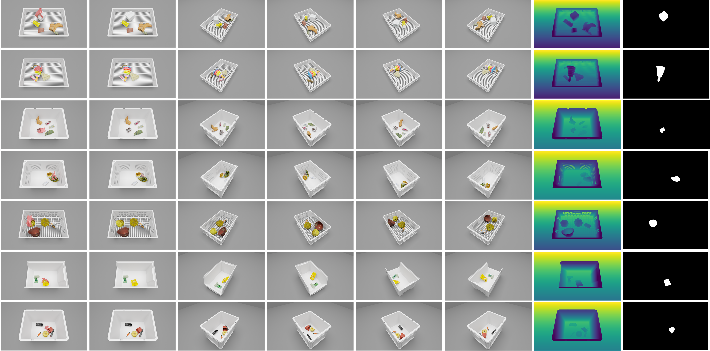
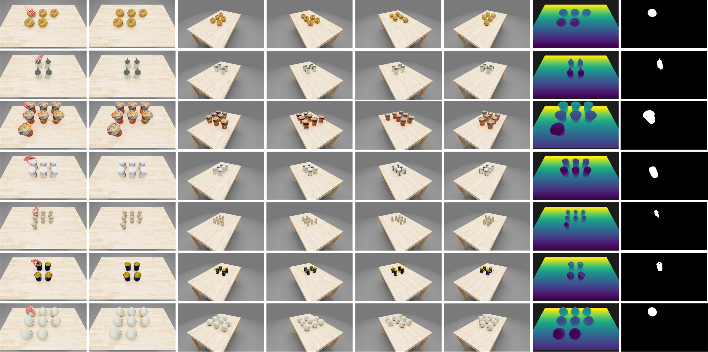
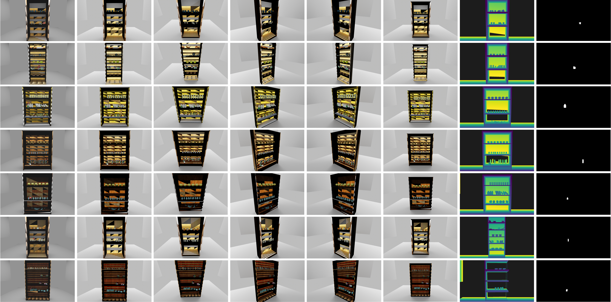

Data scale
2.6M cluttered scenes and 0.4B validated grasp poses.

OmniDex
2.6M cluttered scenes and 0.4B validated grasp poses.
Five scene regimes, diverse supports, objects, and views.
Multimodal generation with Soft-WTA and physical constraints.

Reusable seed grasps are validated in dynamically settled cluttered scenes.
Multimodal grasp generation with physical constraints and ranking.







@inproceedings{fang2026omnidex,
title={OmniDex: Scaling Dexterous Hand Grasping to Diverse Cluttered Scenes},
author={Fang, Naiyu and Luo, Zhongjin and Mo, Yuxin and Huang, Siyuan and Liu, Jianbo and Liu, Yufei and Zhou, Zheyuan and Jin, Chenkai and Wang, Xiaogang and Li, Hongsheng},
booktitle={Advances in Neural Information Processing Systems},
year={2026}
}